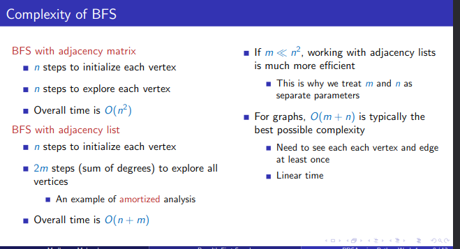

BFS 4 3
time taken:1.6460999177070335e-05
class Queue:
def __init__(self):
"""
Initializes an empty queue.
The queue is represented as a list.
"""
self.queue = []
def addq(self, v):
"""
Adds an element 'v' to the end of the queue.
Parameters:
v: The element to be added to the queue.
"""
self.queue.append(v)
def delq(self):
"""
Removes and returns the element at the front of the queue.
Returns:
The element at the front of the queue if the queue is not empty,
otherwise None.
"""
v = None
if not self.isempty():
v = self.queue[0] # Get the first element in the queue
self.queue = self.queue[1:] # Remove the first element by slicing
return v
def isempty(self):
"""
Checks if the queue is empty.
Returns:
True if the queue is empty, otherwise False.
"""
return self.queue == []
def __str__(self):
"""
Returns a string representation of the queue.
Returns:
A string representation of the queue list.
"""
return str(self.queue)
# Example usage
q = Queue()
q.addq(1)
q.addq(2)
q.addq(3)
print(q) # Output: [1, 2, 3]
print(q.delq()) # Output: 1
print(q) # Output: [2, 3]
print(q.isempty()) # Output: False
q.delq()
q.delq()
print(q.isempty()) # Output: True
print(q.delq()) # Output: None
[1, 2, 3]
1
[2, 3]
False
True
None
q = Queue()
for i in range(3):
q.addq(i)
print(q)
print(q.isempty())
for j in range(3):
print(q.delq(),q)
print(q.isempty())
[0, 1, 2]
False
0 [1, 2]
1 [2]
2 []
True
def BFS(AMat, v):
"""
Performs Breadth-First Search (BFS) on a graph represented by an adjacency matrix.
Parameters:
AMat: 2D numpy array
The adjacency matrix representing the graph.
v: int
The starting vertex for the BFS.
Returns:
visited: dict
A dictionary where keys are the vertices and values are booleans indicating
whether the vertex has been visited (True) or not (False).
"""
# Get the number of rows (and columns) in the adjacency matrix
(rows, cols) = AMat.shape
# Initialize a dictionary to keep track of visited vertices
visited = {}
for i in range(rows):
visited[i] = False
# Initialize the queue for BFS
q = Queue()
# Mark the starting vertex as visited and enqueue it
visited[v] = True
q.addq(v)
# Perform BFS
while not q.isempty():
# Dequeue a vertex from the queue
j = q.delq()
# Get all the neighbors of the dequeued vertex j
for k in neighbours(AMat, j):
# If the neighbor has not been visited, mark it as visited and enqueue it
if not visited[k]:
visited[k] = True
q.addq(k)
# Return the dictionary of visited vertices
return visited
# Define the neighbours function
def neighbours(AMat, j):
"""
Finds the neighbors of a given vertex in a graph represented by an adjacency matrix.
Parameters:
AMat: 2D numpy array
The adjacency matrix representing the graph.
j: int
The vertex for which to find the neighbors.
Returns:
list:
A list of neighbors of vertex j.
"""
neighbors = []
for i in range(AMat.shape[1]):
if AMat[j, i] == 1: # Assuming 1 indicates an edge/connection
neighbors.append(i)
return neighbors
import numpy as np
# Example adjacency matrix
AMat = np.array([[0, 1, 0, 0],
[1, 0, 1, 0],
[0, 1, 0, 1],
[0, 0, 1, 0]])
# Starting vertex
v = 0
# Perform BFS
visited = BFS(AMat, v)
print(visited) # Output will show which vertices were visited
{0: True, 1: True, 2: True, 3: True}

AMat = np.array([
[0, 1, 1, 0, 0, 0, 0, 0, 0, 0],
[1, 0, 0, 1, 0, 0, 0, 0, 0, 0],
[1, 0, 0, 0, 1, 0, 0, 0, 0, 0],
[0, 1, 0, 0, 0, 1, 1, 0, 0, 0],
[0, 0, 1, 0, 0, 1, 0, 0, 0, 1],
[0, 0, 0, 1, 1, 0, 0, 1, 0, 0],
[0, 0, 0, 1, 0, 0, 0, 0, 0, 0],
[0, 0, 0, 0, 0, 1, 0, 0, 1, 0],
[0, 0, 0, 0, 0, 0, 0, 1, 0, 0],
[0, 0, 0, 0, 1, 0, 0, 0, 0, 0]
])
{0: True, 1: True, 2: True, 3: True, 4: True, 5: True, 6: True, 7: True, 8: True, 9: True}
def BFSListPath(AList, v):
"""
Performs Breadth-First Search (BFS) on a graph represented by an adjacency list.
Parameters:
AList: dict
The adjacency list representing the graph, where keys are vertices and values are lists of adjacent vertices.
v: int
The starting vertex for the BFS.
Returns:
visited: dict
A dictionary where keys are vertices and values are booleans indicating whether the vertex has been visited.
parent: dict
A dictionary where keys are vertices and values are the parent of that vertex in the BFS tree.
"""
# Initialize the visited dictionary and parent dictionary
visited, parent = {}, {}
for i in AList.keys():
visited[i] = False
parent[i] = -1
# Initialize the queue for BFS
q = Queue()
# Mark the starting vertex as visited and enqueue it
visited[v] = True
q.addq(v)
# Perform BFS
while not q.isempty():
# Dequeue a vertex from the queue
j = q.delq()
# Get all the neighbors of the dequeued vertex j
for k in AList[j]:
# If the neighbor has not been visited, mark it as visited and set its parent
if not visited[k]:
visited[k] = True
parent[k] = j
q.addq(k)
# Return the visited dictionary and the parent dictionary
return visited, parent
# Example usage
AList = {
0: [1, 2],
1: [0, 3],
2: [0, 4],
3: [1, 5, 6],
4: [2, 5, 9],
5: [3, 4, 7],
6: [3],
7: [5, 8],
8: [7],
9: [4]
}
# Starting vertex
v = 0
# Perform BFS
visited, parent = BFSListPath(AList, v)
print("Visited:", visited)
print("Parent:", parent)
Visited: {0: True, 1: True, 2: True, 3: True, 4: True, 5: True, 6: True, 7: True, 8: True, 9: True}
Parent: {0: -1, 1: 0, 2: 0, 3: 1, 4: 2, 5: 3, 6: 3, 7: 5, 8: 7, 9: 4}
def BFSListPathLevel(AList, v):
"""
Performs Breadth-First Search (BFS) on a graph represented as an adjacency list,
starting from vertex `v`. Computes the level (distance from the start vertex)
and parent (preceding vertex in the BFS tree) for each vertex in the graph.
Parameters:
AList (dict): Adjacency list representation of the graph.
Keys are vertices, values are lists of adjacent vertices.
v (int): The starting vertex for BFS.
Returns:
tuple: A tuple containing two dictionaries:
- level (dict): Maps each vertex to its level (distance from `v`).
- parent (dict): Maps each vertex to its parent in the BFS tree.
The parent of the starting vertex `v` is set to -1.
Example usage:
AList = {
0: [1, 2],
1: [0, 3, 4],
2: [0, 5],
3: [1],
4: [1],
5: [2]
}
level, parent = BFSListPathLevel(AList, 0)
print("Levels:", level)
print("Parents:", parent)
"""
level = {}
parent = {}
# Initialize level and parent for each node
for i in AList.keys():
level[i] = -1
parent[i] = -1
# Create a queue and enqueue the starting vertex
q = Queue()
level[v] = 0
q.addq(v)
# BFS algorithm
while not q.isempty():
j = q.delq()
for k in AList[j]:
if level[k] == -1: # If k is not visited
level[k] = level[j] + 1
parent[k] = j
q.addq(k)
return level, parent
# Example usage
AList = {
0: [1, 2],
1: [0, 3, 4],
2: [0, 5],
3: [1],
4: [1],
5: [2]
}
level, parent = BFSListPathLevel(AList, 0)
print("Levels:", level)
print("Parents:", parent)
Levels: {0: 0, 1: 1, 2: 1, 3: 2, 4: 2, 5: 2}
Parents: {0: -1, 1: 0, 2: 0, 3: 1, 4: 1, 5: 2}